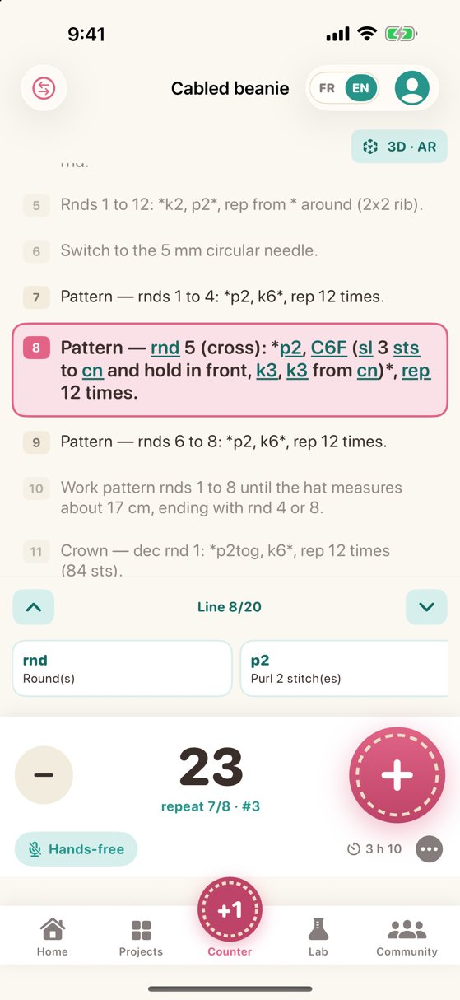
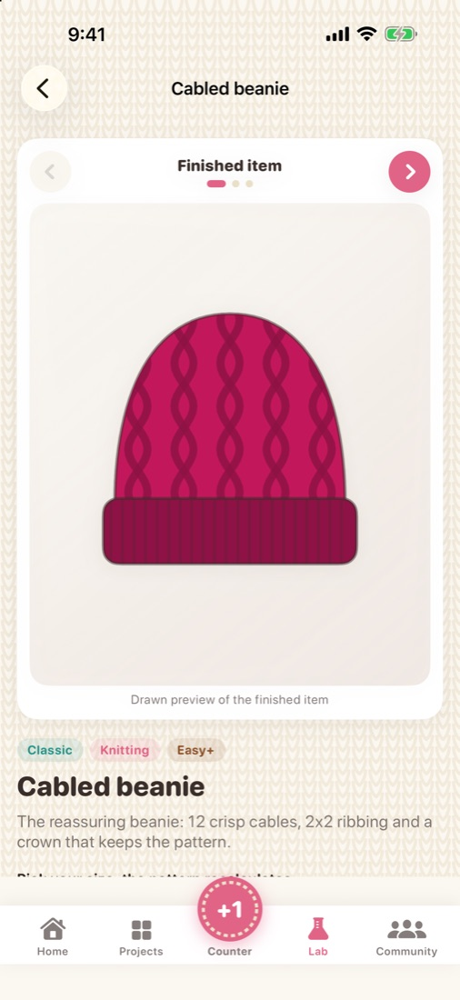
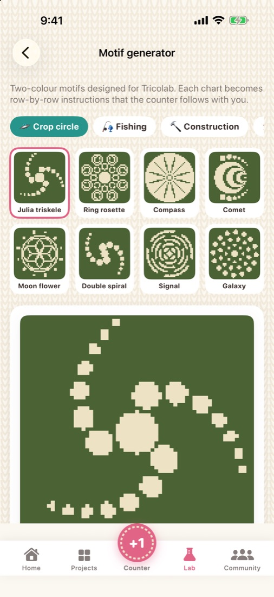
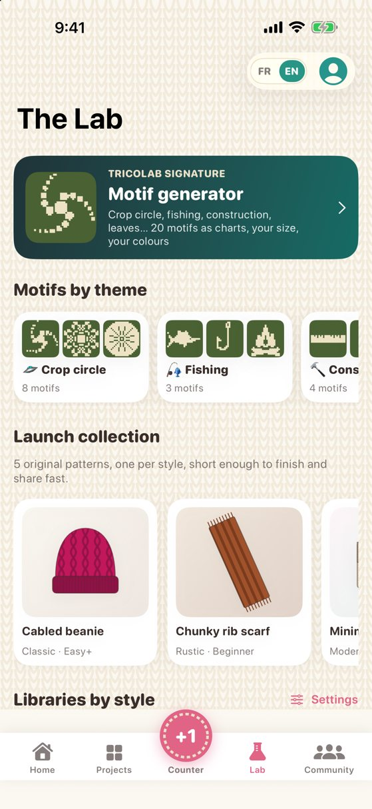
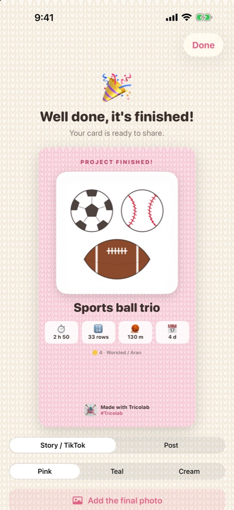
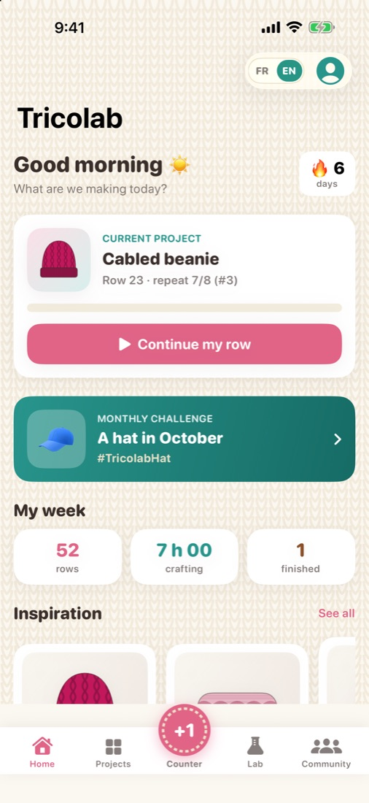

Tricolab
Everything Tricolab does
One lab to count, follow a pattern, create motifs and keep your projects organized.
A hands-free row counter
Built for busy hands: you never have to put your needles down.
- One very big + button, right under your thumb
- Say "next" or "back": the counter moves by itself
- The screen stays on while you work
- Pattern repeats, row goal, undo, time spent

A pattern that never loses your place
Import a PDF, photograph a paper pattern or paste its text.
- Your current line is highlighted and your position is saved
- Abbreviations are explained in plain words, in English and French
- 30 original patterns in 5 styles: Classic, Modern, Rustic, Emoticon and Crop circle
- A drawing of the finished item, a measured schematic, and sizes that recalculate the instructions

A motif generator
20 chart motifs — crop circles, fishing, construction, leaves and more.
- Choose the size, two colours and the technique (double knitting or tapestry crochet)
- Row-by-row instructions are written automatically
- The counter follows your progress right on the chart

The Lab
Everything to learn and calculate, without leaving the app.
- Step-by-step techniques for knitting and crochet
- Fibres, needles, hooks and notions explained
- Chart examples and an abbreviation dictionary
- Calculators: gauge, resizing, yarn quantity, needle sizes

Share and stay motivated
Show what you made, and keep the joy of going on.
- A finished-project card ready for your socials
- A monthly challenge with its hashtag
- Badges to unlock and share
- Your year in review: rows, hours, yarn used, projects finished

Your projects, organized
One page per creation, on iPhone and iPad alike.
- Photos, pattern, yarn, notes and progress in one place
- Yarn stash
- Everything stays on your device: no account, no ads, no trackers

Free or Tricolab Complete
| Free | Complete | |
|---|---|---|
| Hands-free counter | ✓ | ✓ |
| Pattern reader (PDF, photo, text) | ✓ | ✓ |
| The Lab and its calculators | ✓ | ✓ |
| Monthly challenges and shareable cards | ✓ | ✓ |
| Original patterns | 5 | 30 |
| Chart motifs | 3 | 20 |
"Tricolab Complete" is a one-time CA$4.99 purchase, with no subscription.
Ready to knit, crochet, create?
Tricolab is available on the App Store, for iPhone and iPad. Free, with one optional purchase.
Download on the App Store